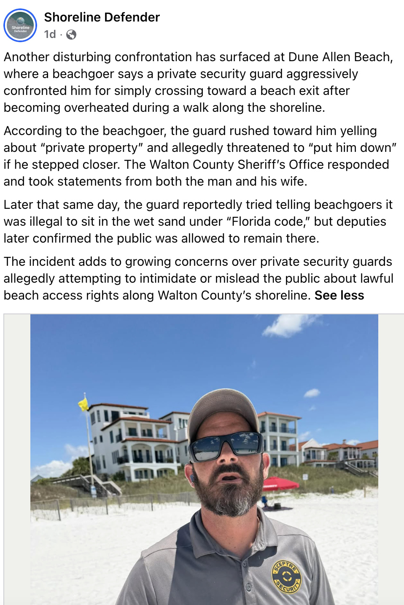

Littrell purchased a beachfront property in Walton County, Florida on the Gulf Coast. He put up no-trespassing signs and physical markers showing the property line. Despite this, he alleges daily trespassers deliberately antagonize, bully, and harass his family.
He sued the Walton County Sheriff for allegedly refusing to remove trespassers from his private property. Community members have pushed back, claiming Littrell is trying to privatize public beach access.
The situation has escalated dramatically. Littrell says his family has received death threats, arson threats, and social media harassment. He told Fox News: "They've talked about burning our house down."
In September 2025, Littrell and his wife filed a second lawsuit against Carolyn Barrington Hill, a 67-year-old Walton County woman, alleging repeated trespassing, harassment, filming without permission, and encouraging others to trespass — seeking $50,000 in damages.
Late February 2026 — case dismissed with prejudice. The judge dismissed the sheriff lawsuit sua sponte (on her own initiative) without giving Littrell's team a hearing. Attorney Peter Ticktin filed a motion for rehearing in March 2026, arguing the court misapprehended the facts and failed to consider all well-pleaded allegations. A Notice of Hearing was filed for May 19, 2026 — many believed the case was dead, but it's back on the calendar.
A third case (23-CA-000671, filed Dec 2023, consolidated) is also active: BLB Beach Hut LLC alongside beachfront owners John & Mary Howard, Vicki L. Inman, and John K. Chandler as Trustee v. Dune Allen Beach Inc. — a Quiet Title lawsuit over historic deed descriptions and the meaning of "315 feet." The appellate court sent the case back to the local court after recognizing that important factual and legal questions remain unresolved. A status conference is set for June 9, 2026.
- 01The sheriff has refused to enforce trespass laws on Littrell's private beachfront property.
- 02Trespassers deliberately target the family due to his celebrity status.
- 03The family has received death threats, arson threats, and sustained harassment on social media.
- 04Community members argue the beach access is customary and Littrell is attempting to privatize public space.
For many residents, these cases have become larger than individual disputes. They represent an ongoing fight over whether Florida's shoreline — particularly the wet sand and areas historically connected to the public trust — will remain accessible to the public or continue moving toward private control through litigation and enforcement.

A beachgoer reported that a private security guard aggressively confronted them for simply crossing toward a beach exit after becoming overheated during a walk along the shoreline. The guard reportedly rushed toward the beachgoer yelling about "private property" and allegedly threatened to "put him down." The Walton County Sheriff's Office responded and took statements from both parties. Later that same day, the guard reportedly told other beachgoers it was illegal to sit in the wet sand under "Florida code" — but deputies later confirmed the public was allowed to remain there.